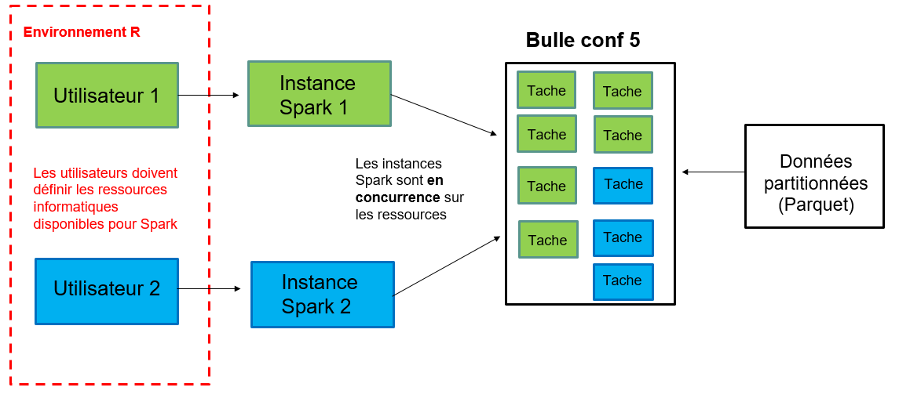
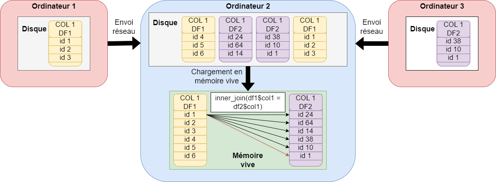
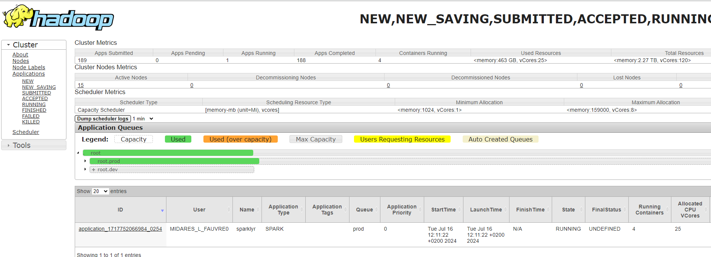
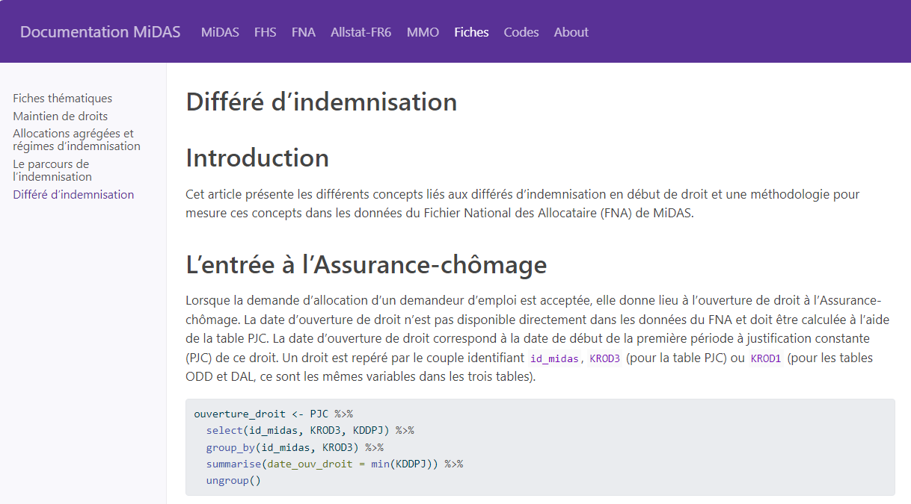

Bonnes pratiques
Les bonnes pratiques 🤝
Mode local : inadapté et mauvaise pratique

Spark et le mode local :
un seul ordinateur alors que spark est fait pour plusieurs ordinateurs distincts
beaucoup moins de ressources disponibles sur la bulle que sur le cluster
mauvaise gestion de l’allocation des ressources entre utilisateurs : pas faite pour plusieurs utilisateurs
ralentissements considérables et bugs : bloque les autres utilisateurs
▶️spark n’est adapté que pour le cluster de calcul, la bulle pour faire du R sans spark sur des données peu volumineuses
Utiliser les configuratoins recommandées

Les ordinateurs du cluster ont besoin de s’envoyer des données par le réseau : c’est la partie la plus lente d’un programme spark !
Si j’augmente les ressources : par exemple, je réserve 3 ordinateurs du cluster plutôt que 2
Effet puissance de calcul : plus de ressources pour faire les calculs = réduction du temps de calcul
Effet augmentation des échanges réseau (shuffles) : augmentation du temps de calcul
Gêne des autre utilisateurs
Ne pas collecter
Collecter c’est utiliser l’instruction collect(). Elle permet de rapatrier l’ensemble des résultats du cluster vers la bulle et la session R de l’utilisateur en format R, par exemple des data.frames.
Collect() :
est une action : elle déclencher tous les calculs
implique des échanges réseau très importants : entre ordinateurs du cluster et du cluster vers la bulle : c’est extrêmement long, moins efficient que l’enregistrement sur disque directement depuis spark
rappatrie les résultats (une table) dans la mémoire vive de R, qui est sur la bulle : si le résultat est volumineux, cela bloque les autres utilisateurs
Recommandations :
Ne pas collecter des tables de plus de 15 Go
Utiliser les autres méthodes proposées pour ne pas bloquer les utilisateurs qui ont besoin de R en mode classique
Ne pas changer les configurations
Fermer sa session
Il faut impérativement fermer sa session spark après une session de travail. Deux moyens pour ça :
fermer R Studio
si on ne ferme pas RStudio, utiliser la fonction
spark_disconnect_all()dans son code
Si on souhaite lancer un code le soir en partant, on n’oublie pas le spark_disconnect_all() à la fin du code.
Les ressources réservés par un utilisateur ne sont libérées pour les autres que lorsqu’il se déconnecte. Ne pas se déconnecter, c’est bloquer les ressources. Si j’ai réservé deux ordinateurs du cluster sur 15, personne d’autres ne peut les réserver tant que je n’ai pas déconnecter ma session spark.
Nous fermerons les sessions ouvertes trop longtemps (départ de congés sans déconnexion) si des utilisateurs présents en ont besoin : risque de perte du travail non enregistré.
Pour ne pas bloquer les collègues 👨💻
Yarn
Yarn permet de consulter la réservation des ressources par les utilisateurs.
On peut y accéder en copiant le lien suivant dans Google chrome sur la bulle (mettre en favori) : midares-deb11-nn-01.midares.local:8088/cluster
Vérifier que notre session est fermée et qu’on ne prend pas trop de ressources : yarn

Mutualiser les expériences
Aide au passage d’un code sur le cluster
Programmer entre collègues
Contributions à la documentation MiDAS : section fiches, à l’aide de pull requests sur github
